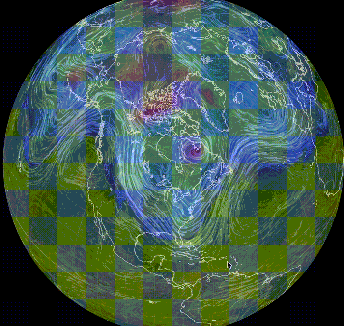
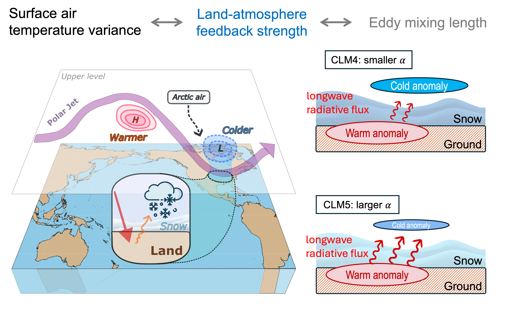
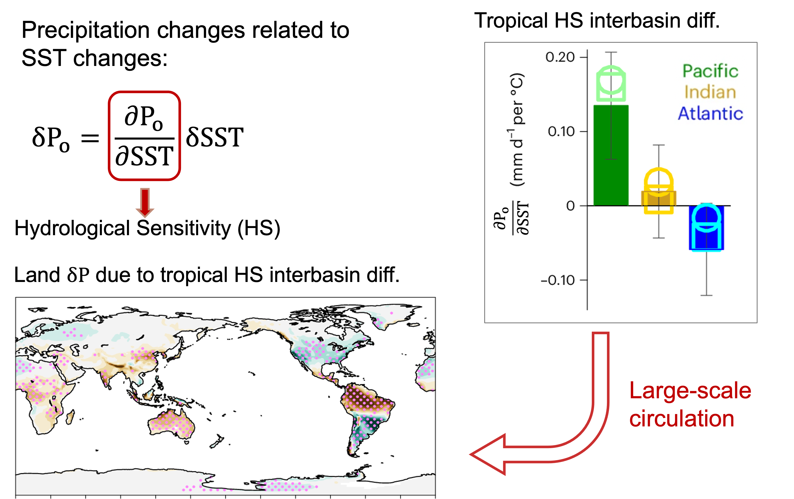
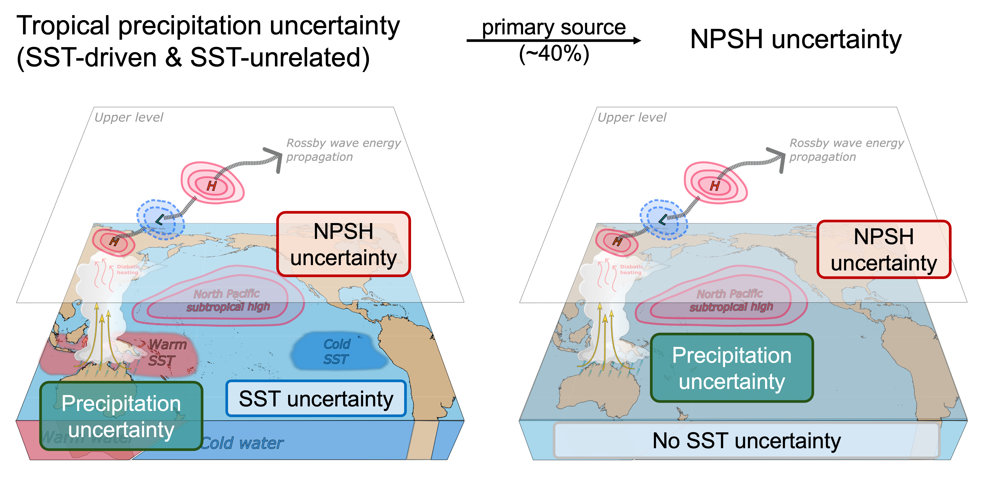
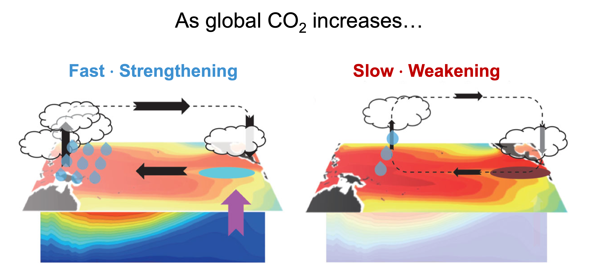

Florida State University
Atmospheric and Climate Modeling Group
Welcome to our research group! I am Kezhou Lu, an Assistant Professor in the Department of Earth, Ocean and Atmospheric Science at Florida State University. Our group seeks to understand the fundamental processes governing atmospheric and climate dynamics. By integrating physical theory, advanced AI tools, and climate models of varying complexity, we study changes and variability in large-scale atmospheric circulation, how they interact with land, ocean, and the hydrological cycle, and how they shape weather and climate extremes.
I am actively recruiting Ph.D. students interested in climate modeling to begin in Spring or Fall 2027. Learn more about the EOAS graduate program here.

2026 North American cold wave
earth.nullschool.net
Selected Publications
View all →
The role of land-atmosphere feedback on midlatitude wintertime surface temperature variability
Read paper →
Diverging hydrological sensitivity among tropical basins
Read paper →
Origins of uncertainty in the response of the summer North Pacific Subtropical High to CO2 forcing
Read paper →
Mechanisms of fast Walker circulation responses to CO2 forcing
Read paper →News
News archive →Welcome to Howard Spiegel, Ryan Durant, and Veronica Kostka, who joined our group as undergraduate researchers!
Meet the students →Melody joins the faculty of Department of Earth, Ocean and Atmospheric Science at Florida State University!
Melody gives a talk at the AGU Early-Career Seminar on how land-atmosphere interactions influence wintertime midlatitude land air temperature variability.
Read more →